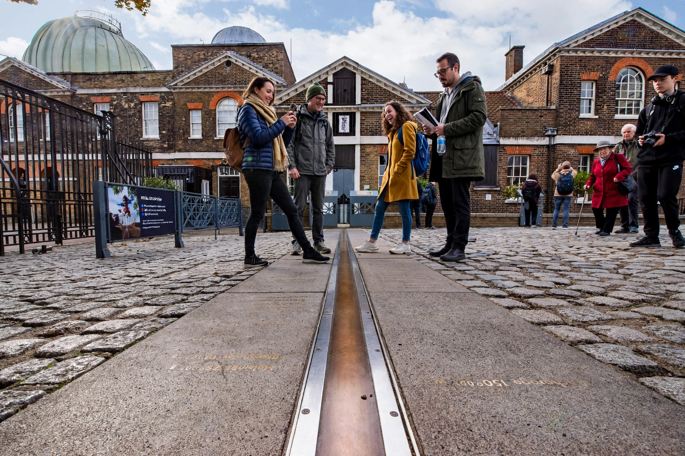

Wikipedia — the free encyclopedia

| Coordinate system | Geographic coordinates |
| Range | 0° at the Prime Meridian to ±180° |
| Reference line | Prime Meridian (Greenwich) |
| Lines of equal longitude | Meridians |
Longitude is a geographic coordinate that specifies the east–west position of a point on the Earth's surface, measured as an angle east or west of the Prime Meridian — the line running through the Royal Observatory at Greenwich, London, assigned 0°. Longitude ranges from 0° to 180° east and 180° west; all lines of equal longitude, called meridians, are great semicircles converging at the two poles.
Unlike latitude, which has a natural zero at the equator, the zero of longitude is a human convention, adopted internationally in 1884.
Because the Earth rotates 360° in 24 hours, longitude translates directly into time: each 15° corresponds to one hour. Local solar time advances eastward, which is why time zones are arranged in roughly longitudinal bands and why the International Date Line lies near 180°.
At sea, determining latitude was comparatively easy from the Sun or stars, but finding longitude required knowing the time at a reference meridian — the famous 'longitude problem'. It was largely solved in the 18th century by John Harrison's marine chronometers, which could keep accurate time on a rolling ship; the British government had offered a substantial Longitude Prize for a practical method.